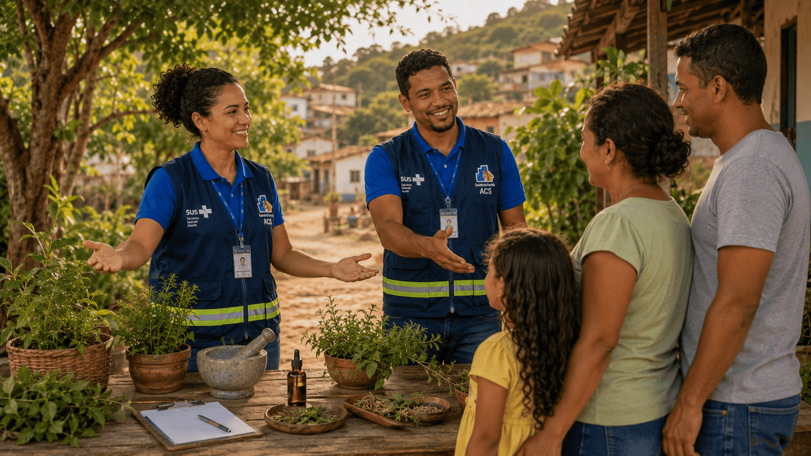

Unidades do Módulo
Este módulo foi estruturado e dividido em unidades com o objetivo de promover a qualificação profissional de forma assertiva e organizada.
Apresentação
Conheça a estrutura, os objetivos e os conteúdos do módulo.

Boas-VindasBoas-Vindas
Inicie o percurso com uma mensagem de acolhimento e apresentação da caminhada formativa.

Introdução às PICS no SUS
Explore o contexto das PICS no Brasil, e conheça as principais práticas integrativas.

Práticas integradas à atuação dos ACS e ACE - Parte I
Aprofunde práticas integrativas e reflita sobre limites, segurança e responsabilidade.

Práticas integradas à atuação dos ACS e ACE e questões éticas - Parte II
Reflita sobre o campo de atuação no território e as PICS como estratégia de cuidado integral.

Campo de atuação no território e PICS como estratégia de cuidado integral
Revise os aprendizados e realize a avaliação final do módulo.
Autoavaliação e Avaliação do módulo
Revise os aprendizados e realize a avaliação final do módulo.